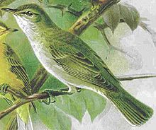
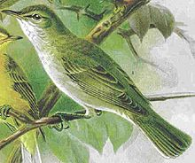

| Olive-tree Warbler | |
|---|---|
|  | |
| Conservation status | |
| Binomial name | |
| Hippolais olivetorum Strickland, 1837 |
| Olive-tree Warbler | |
|---|---|
|  | |
| Conservation status | |
| Binomial name | |
| Hippolais olivetorum Strickland, 1837 |
The Olive-tree Warbler (Hippolais olivetorum) is an Old World warbler in the tree warbler genus Hippolais. It breeds in southeast Europe and the near east. It is migratory, wintering in eastern and southern Africa, from Kenya south to South Africa.
This small passerine bird is a species found in open-canopy oakwoods, olive groves, orchards and almond plantations. 3-4 eggs are laid in a nest in a low tree or a bush.
This is a medium-sized warbler, similar to in size to the Barred Warbler, with a slightly longer bill and shorter tail. It is the largest Hippolais warbler, with a heavy bill, rather flat crown, long wings, and heavy legs. The adult has a dusty- or brownish-grey back and wings, and dusty-white underparts.
It feeds on invertebrates. Its song is a succession of loud creaks and squawks, lower in pitch than other Hippolais warblers, and slower in delivery.

{kind=link}